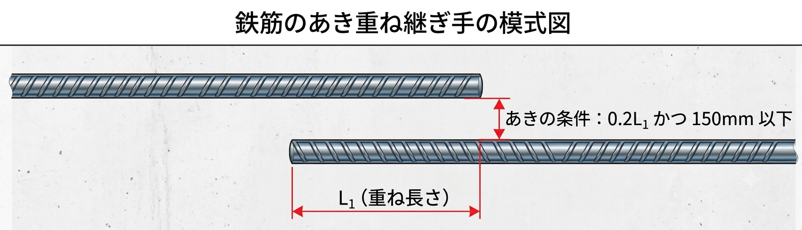

あき重ね継手とは？意味・規準（あき間隔0.2L₁かつ150mm以下）・寸法を解説
本記事はアフィリエイト広告（書籍）を含みます。価格・在庫は変動するため、最新情報は各販売サイトでご確認ください。
あき重ね継手とは、鉄筋同士を接触させず、あき（すき間）を設けて重ねる重ね継手のことです。鉄筋が触れていないため一見「強度が不安」に思えますが、所定の規準を満たせば通常の重ね継手と同等に扱えます。この記事では、あき重ね継手の意味・あき間隔の規準・寸法・関連する配筋指針との関係を整理します。
- あき重ね継手は鉄筋同士が接触しない重ね継手。規準を満たせば通常の重ね継手と同等に扱える。
- あき間隔の規準は「0.2L₁ かつ 150mm 以下」。継手長さL₁は鉄筋径・材質・コンクリートの設計基準強度Fcで決まる。
- 根拠はRC構造計算規準・配筋指針などに明記されている。
あき重ね継手とは？
あき重ね継手とは、鉄筋同士が接触しない（鉄筋間にあきを設ける）重ね継手の方法です。通常の重ね継手は2本の鉄筋を密着させて重ねますが、あき重ね継手では下図のように鉄筋の間にすき間があります。

鉄筋が触れていないため継手強度に不安を感じますが、後述の規準を満たせば通常の重ね継手と同等に扱えるとされています。これは、鉄筋に作用する力がコンクリートの付着を介して相手の鉄筋へ伝わるためで、考え方は通常の重ね継手と同じです。
RC造では、配筋の納まりの都合で「継手を設けたいのに鉄筋同士が接触しない」場面があります。こうしたときに、あき重ね継手が有効です。
あき重ね継手の間隔と寸法（規準）
あき重ね継手の継手長さとあき間隔は、次のように定められています。
- 継手長さ ＝ L₁（通常の重ね継手と同じ重ね長さ）
- あき間隔 ≦ 0.2L₁ かつ 150mm 以下（この上限を超えると継手として有効に扱えません）
継手長さ L₁ は鉄筋径に比例し、さらに鉄筋の材質（SD295・SD345・SD390など）とコンクリートの設計基準強度Fcによって変わります。具体的な数値（○d）は「鉄筋継手の種類｜重ね継手長さ表」で確認できます。たとえば Fc24・SD345・D19 なら 40d ＝ 40×19 ＝ 760mm 以上が目安です。
規準が記載されている書籍
あき重ね継手の規準は、日本建築学会の「鉄筋コンクリート構造計算規準・同解説」や「鉄筋コンクリート造配筋指針・同解説」などに明記されています。実務で根拠を確認するなら、手元に置いておきたい定番書です。


混同しやすい用語の整理
あき重ね継手と（通常の）重ね継手
重ね継手は鉄筋同士を接触させて重ねる方法、あき重ね継手は鉄筋間にあきを設けた継手です。規準（あき間隔0.2L₁かつ150mm以下）を満たせば同等の強度を持つとされますが、あき間隔には上限がある点に注意します。
あきとかぶり
混同しやすいのが「あき」と「かぶり」です。あき＝鉄筋相互の間隔、かぶり＝コンクリート表面から鉄筋表面までの距離を指します。どちらも配筋の寸法規定ですが、あきは鉄筋どうしの関係、かぶりは鉄筋とコンクリート外面の関係です。
あき重ね継手のまとめ表
| 項目 | 内容 | 備考 |
|---|---|---|
| 継手長さ（L₁） | 鉄筋径・Fc・材質で決まる所定長さ | 例：Fc24・SD345・D19で 40d＝760mm 以上 |
| あき間隔の上限 | 0.2L₁ かつ 150mm 以下 | 上限を超えると継手として無効 |
| 通常の重ね継手との違い | 鉄筋同士が接触しない | 規準を満たせば同等の強度とみなせる |
まとめ
- あき重ね継手は鉄筋同士が接触しない重ね継手。規準を満たせば通常の重ね継手と同等に扱える。
- あき間隔は0.2L₁ かつ 150mm 以下。継手長さL₁は鉄筋径・材質・Fcで決まる。
- 規準はRC構造計算規準・配筋指針に明記。実務では採用する基準の最新版で必ず確認を。
継手の全体像は「鉄筋継手の種類とは？重ね継手の長さ・圧接・機械式」、RC造の基礎は鉄筋コンクリート造カテゴリにまとめています。
※あき間隔・継手長さの規定は、適用する基準（日本建築学会のRC構造計算規準・配筋指針、公共建築工事標準仕様書など）や年度の改定により異なります。実務では必ず採用基準の最新版をご確認ください。